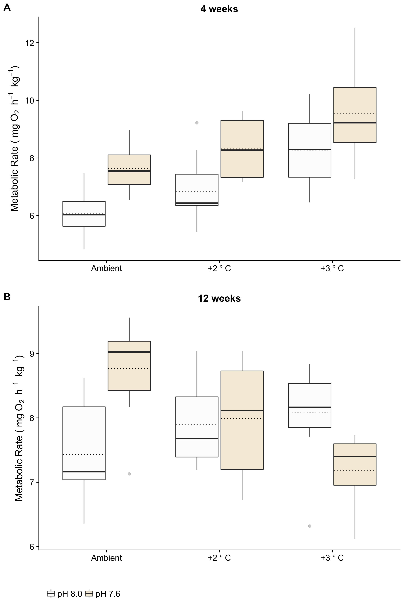
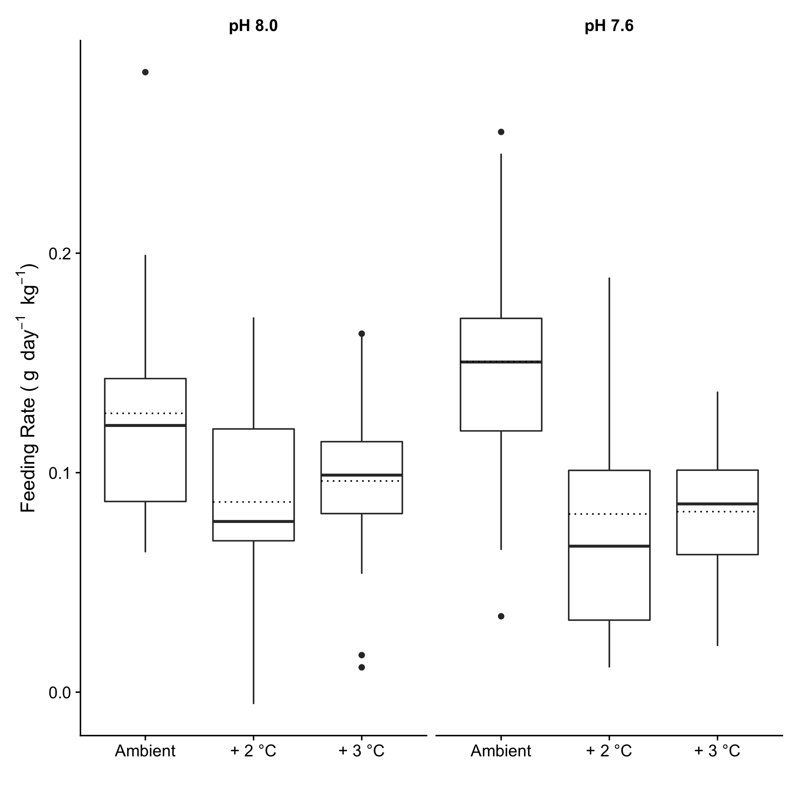

Chapter 3 Scope for growth of the sea urchin Heliocidaris erythrogramma under future warming and acidification
3.1 Introduction
As maintaining energy surplus is the key for long-term survival, bioenergetics-based models can be used to examine how environmental stressors affect the fitness and survival of marine organisms by changing their energy budget.
3.2 Methods
3.2.1 Collection
Heliocidaris erythrogramma (44.15 \(\pm\) 3.25 mm test diameter) were collected by hand at the subtidal zone from Milk Beach (-33.856478, 151.266958) and Bottle and Glass Point (-33.847960, 151.270122) in June, 2014, when sea surface temperature (SST) was \(15.3^{\circ}C\). The urchins were transported to the Sydney Institute of Marine Science (SIMS) in Chowder Bay and held in aquaria (\(80\ L\)) supplied with ambient flow-through seawater (FSW, \(70\ \mu m\), \(1.5\ L\ min^{-1}\)). After 1 week, they were randomly allocated into treatment groups based on three temperature profiles (ambient: \(+0^{\circ}C\), elevated: \(+2^{\circ}C\) and \(+3^{\circ}C\), adjusted weekly with regard to the mean SST profile as detailed below) and two constant total pH (\(pH_T\), on the total hydrogen scale) levels (ambient \(8.0\), acidic: \(7.6\)) in a fully orthogonal design (Fig. 1).
3.2.2 Experimental setup
We performed all acclimation experiments in a constant-temperature room where the lighting was adjusted weekly to reflct the diurnal sunrise/sunset cycle. Each header tank was supplied with FSW (\(20\ \mu m\)) using individual thermocouple-solenoid feedback systems that automatically mixed warm (\(25^{\circ}C\)) and cold (\(14.5^{\circ}C\)) filtered FSW (\(20\ \mu m\)) in a \(2\ L\) mixing chamber to supply temperature-controlled water consistently. Each header tank was also equipped with a heater (75 W, EHEIM GmbH & Co KG, Germany) attached to a temperature controller (model 7028/3, TUNZE Aqraientechnik GmbH, Germany) as a second level of temperature control.
Sea water pH was maintained using a mixed \(CO_2\) system where a thermally-compensated, low-flow controller valve (Parker Hannifin, OH, USA) and a proportional–integral–derivative controller, updated every \(10\ s\), were used to precisely inject food-grade \(CO_2\) (BOC, Australia) into ambient air that had been scrubbed of \(CO_2\). The \(CO_2\)-mix was bubbled vigorously and continuously into header tanks via \(20 cm\) ceramic diffusers.
3.2.2.1 Gradual adjustment to treatment conditions and acclimation
Each treatment consisted of three replicate tanks with 10 urchins per tank (total \(n = 180\)). To minimise physiological shock to altered conditions, adjustments to the levels of warming and acidification of the tanks were performed gradually. Temperature was increased at a rate of \(1^{\circ}C\) every 6 days until target elevated temperatures were achieved. Sea water pH was decreased at a rate of \(-0.1\ pH_T\) units every week. Both temperature and pH manipulations were performed in a staggered schedule such that all treatments achieved target conditions in the same week (Fig. 3.1 A). We made all adjustments in header tanks such that treatments slowly stabilised to their new conditions within 1 to 2 days. The adjustment process took 7 weeks, and no mortality was recorded during this period. Once the treatment conditions were established, treatment temperatures were at \(15.6 \pm 0.4^{\circ}C\), \(17.6 \pm 0.4^{\circ}C\) and \(18.6 \pm 0.3^{\circ}C\) (s.d.) for the ambient, \(+2^{\circ}C\) and \(+3^{\circ}C\) treatments respectively.
After the adjustment period, the urchins were subject to an acclimation protocol where temperature levels were regulated weekly based on an offset to previously-recorded mean weekly temperature from winter to summer temperatures in Sydney Harbour (Fig. 3.1 A & B). Thus treatment temperatures were adjusted weekly to mimic the seasonal change expected over winter to early summer. The temperatures were based on reference data collected from in situ loggers deployed in Chowder Bay from 2009–2014 (Fig. 3.2). Because temperature has an effect on \(CO_2\) solubility and temperatures were changing every week, the system maintained constant pH (not \(CO_2\) ppm) within each treatment.
![Temperature and pH in treatment tanks, measured daily. Only one replicate tank for every treatment was selected at random for daily measurements. Treatment temperatures were measured using a digital thermometer while pH was estimated spectrohotometrically using m-Cresol dye. Shaded regions are the pre-acclimation adjustment periods for temperature (pink) and pH (blue), respectively. (A) Coloured lines represent the planned temperature profiles (+0, +2, +3), which change every week, while coloured dots represent the actual temperatures measured. The black dots are the reference temperatures collected from *in situ* loggers deployed in Chowder Bay from 2009 to 2014, averaged by day. (B) Black lines represent the reference constant pH levels, with the initial adjustments (8.0, 7.6). Shapes represent the pH treatment group (triangle: 8.0; circle: 7.6), while colours represent the temperature treatment group (+0, +2, +3).](figs/ch_multistressor/acclim.png)
Figure 3.1: Temperature and pH in treatment tanks, measured daily. Only one replicate tank for every treatment was selected at random for daily measurements. Treatment temperatures were measured using a digital thermometer while pH was estimated spectrohotometrically using m-Cresol dye. Shaded regions are the pre-acclimation adjustment periods for temperature (pink) and pH (blue), respectively. (A) Coloured lines represent the planned temperature profiles (+0, +2, +3), which change every week, while coloured dots represent the actual temperatures measured. The black dots are the reference temperatures collected from in situ loggers deployed in Chowder Bay from 2009 to 2014, averaged by day. (B) Black lines represent the reference constant pH levels, with the initial adjustments (8.0, 7.6). Shapes represent the pH treatment group (triangle: 8.0; circle: 7.6), while colours represent the temperature treatment group (+0, +2, +3).

Figure 3.2: Mean weekly-averaged temperature (\(\pm\) s.d.) for Chowder Bay, NSW, Australia, from 2009 to 2014. Data were obtained from loggers deployed in situ at 3 m depth. Colours represent the adjustment (blue) and acclimation (red) periods of the experimental treatments, respectively. The shaded region is the max/min of the temperatures recorded. This data was used to determine the temperature profile of elevated temperature treatments.
3.2.3 Monitoring
Temperature was recorded daily in all tanks using a NIST-calibrated temperature probe. Sea water pH was measured spectrophotometrically with a custom-built sampling system connected to an Ocean Optics USB4000+ fibre optic spectrometer (Appendix 4.2), using m-Cresol dye indicator (Acros Argonics, catalog no. 110585000, Lot A0321770) and calculated accorduing to Liu et al. (2011). The measurements were calibrated to certified reference material (CRM) for \(CO_2\) in seawater (Batch 139) following SOP 6b in Dickson et al. (2007). All treatments and tanks were measured for pH once every 2 to 3 days. In addition, the sampling system automatically measured pH in one ambient and one aciified treatment every two hours to characterise pH during the acclimation period (Appendix 4.3).
To estimate total alkalinity (\(A_T\)) of the sea water, water samples (330 mL) were taken randomly from experimental tanks every 2 to 3 weeks (total \(n = 64\) samples). \(A_T\) was determined by potentiometric titration (907 Titrando, Metrohm), calibrated using sea water CRMs (Batch 139; Dickson et al., 2007). The carbonate chemistry parameters \(pCO_2\), calcite and aragonite staturation states (\(\Omega Ca\) and \(\Omega Ar\)) were calculated by running the data in the “seacarb” package in R (Lavigne et al., 2011) using the dissociation constants of Mehrbach et al. (1973) refitted by Dickson & Millero (1987).
3.2.4 Maintenance
Specimens were fed on a diet mixture of fresh Ecklonia radiata and Sargassum spp. suspended in kelp-based agar (MSC CO, Kyeongnam, Korea). To prepare the food, E. radiata, and Sargassum spp. were washed in fresh water, dried at \(50^{\circ}C\) over 48 hours, and then ground into fine powder for storage. The food was mixed with agar powder to a ratio of 1:4 by weight, and then mixed with FSW (20 \(\mu m\)) to a ratio of 1:10 by weight at \(\sim\) 80 \(^{\circ}C\). The agar was left to cool and solidify for 45 minutes, before it was cut into 1 to 2 \(cm^2\) cubes and fed to the specimens. We fed the specimens twice a week by placing 3 to 4 cubes on top of each individual urchin. This feeding technique ensured minimal competition for food resources between specimens and excess supply of food during the entire experimental period.
The tanks were siphoned every two days and wiped weekly to remove faecal matter and minimise algal growth. \(CO_2\) diffusers were scrubbed and replaced every 3 to 5 days. Header tanks were cleaned of algal growth once a month.
3.2.5 Survival
Survival was recorded by measuring the survival time of individual specimens from the star of temperature adjustments (August 2014) to December 2014. Specimens were observed daily for mortality, and dead urchins were removed immediately.
3.2.6 Metabolic rate
Routine weight-specific metabolic, \(MO_2\) was estimated by intermittent-flow respirometry at two different time-points: at 4 and 12 weeks of acclimation, each time from a random subsample of specimens (\(n = 10\ treatment^{-1}\)). The specimens were not fed for 5 days prior to measurements and transferred individually into \(1\ L\) respirometry chambers. Each respirometry chamber was kept in an individual water bath and contained an oxygen sensor spot (SP-PSt3-NAU, PreSens GmbH, Germany) for the detection of dissolved oxygen concentration using an external multi-channel sensor (OXY-10-mini, PreSens Gmbh, Germany). A magnetic stirrer ensured even mixing of water. The specimens were allowed to adjust to the chambers under flow-through conditions for 30 minutes prior to respirometry measures.
To measure oxygen uptake, chambers were sealed and dissolved oxygen (DO, \(mgO_2\ L^{-1}\)) was measured every 10 seconds until a 10% decrease in DO was recorded. The chamber was then flushed, and the measurement repeated. Background respiration was determined by recording FSW-only blanks (\(n\) = 8) to correct the recordings for background respiration and instrument drift. At the end of each measurement, sea water weight was calculated by deducting chamber, stir bar and urchin wet weights from the total weight of the chamber, and then converted to volume using sea water density estimated from current temperature, salinity and barometric air pressure (Fofonoff & Millard 1983).
Weight-specific \(MO_2\) (\(mgO_2\ L^{-1}\ h^{-1}\)) was calculated using the equation (Lighton 2008):
\[\begin{equation} MO_2 = \frac{\Delta O_2V}{W} \tag{3.1} \end{equation}\]where \(\Delta O_2\) is the linear regression of \(O_2\) concentration over time (\(mg\ L^{-1}\ h^{-1}\)), \(V\) is the volume of the sea water available (\(L\)) and \(W\) is the wet weight of the urchin (\(g\)).
3.2.7 Feeding rate and assimilation efficiency
Feeding trials were conducted at 13 weeks of acclimation. Specimens were transfered into individual tanks (\(4\ L\)) supplied with flowthrough FSW (\(6\ L\ h^{-1}\)) at the same treatment conditions. They were starved for 6 days in their new environments before feeding trials commenced, using the same agar-based diet mixture used in routine feeding. Initial wet weight of the diet was weighed and then added to each replicate tank in excess. Autogenic controls containing only the diets were used to determine background changes in agar composition (\(n = 24\)).
After 48 hours, unconsumed food was carefully collected and oven dried at \(80^{\circ}C\) for 48 h, and then re-weighed. Faecal pellets were also siphoned at the same time for calculations of assimilation efficiency (see below). The specimens were removed from the tanks, blotted briefly with paper towel, and weighed. To convert the initial wet weight (\(W_{wet}\)) of the diets to their dry-weight equivalents, the wet:dry ratio of the diet was determined in a regression analysis of wet to dry weights (\(n = 60\), \(r^2 = 0.82\), \(p < 0.01\)), and determined as:
\[\begin{equation} W_{dry} = (0.1529 \times W_{wet}) - 0.036 \tag{3.2} \end{equation}\]Feeding rate, \(C\) (\(mg\ day^{-1}\ kg^{-1}\)), was calculated by subtracting the final dry weight (\(W_{T1}\)) from the initial dry weight (\(W_{T0}\)), with adjustments for background changes and specimen weight (\(W_{sp}\)) and adjusted by time (\(T\)):
\[\begin{equation} C = \frac{W_{T0} - W_{T1}}{W_{sp} \cdot T} \tag{3.3} \end{equation}\]Faecal samples were dried in an oven after at \(60^{\circ}C\) over 48 hours and weighed. The faecal matter were then ashed in a muffle furnace at \(500^{\circ}C\) for 2–3 hours and re-weighed for determination of ash-free dry weight (AFDW). Assimilaiton efficiency (%) was calculated using the Conover method (Conover, 1966):
\[\begin{equation} A = \left[ \frac{F - E}{(1 - E) \cdot F} \right] \times 100\% \tag{3.4} \end{equation}\]where \(F\) and \(E\) denote the AFDW:dry weight fraction measured in the diet and the faeces, respectively. All weights were determined using the same analytical balance accurate to 0.0001 g.
3.2.8 Ammonia excretion
Ammonia excretion rate was measured after 12 weeks of acclimation in treatments following respirometry measurements using the same respirometry chambers. For each treatment, we randomly sampled 10 specimens that were not previously used in respirometry trials (total \(n = 60\)). Background production of ammonia was determined by repeating the experiment without specimens (\(n = 3\ treatment^{-1}\)). Initial water samples were carefully filtered at \(0.22 \mu m\) and collected. The chambers were sealed and left in the water baths for 3 hours before final water samples were collected again.
All water samples were immediately frozen and stored in darkness until they were analysed spectrophotometrically (within 10 days) for total ammonia, following the methods desribed in Parsons et al. (1984). Spectrophotometric readings were obtained at 640 nm on a microplate reader (CLARIOstar Microplate Reader, BMG LABTECH, Offenburg, Germany) and calibrated using daily blanks and a standard ammonium solution (Parsons et al., 1984). Ammonia excretion rate, \(U\) (\(\mu g\ kg^{-1}\ h^{-1}\)) was calculated according to the equation:
\[\begin{equation} U = \frac{N_c}{W \cdot T} \tag{3.5} \end{equation}\]where \(N_c\) is the concentration of ammonia (\(\mu g\ at\mbox{-}N\ L^{-1}\)), \(W\) is the weight of the specimen in \(kg\) and \(T\) is the time elapsed in hours. Ammonia concentration, \(N_c\) is determined following Parsons et al. (1984) and is summarised in the equation:
\[\begin{equation} N_c = \frac{3 \cdot V}{\Delta E} \tag{3.6} \end{equation}\]where \(\Delta E\) is the difference between the standard and corrected spectrophotometric extinction values of the blue indophenol colour formed with ammonia and \(V\) is the volume of the chamber (\(L\)).
3.2.9 Scope for growth (SfG) parameters
As it was not possible to measure all necessary physiological measurements on the same day, we used the same data collected as above for metabolic rate, feeding rate, assimilation efficiency and excretion rate data to determine scope for growth in H. erythrogramma.
Oxygen consumption was converted to energy equivalent values to calculate the energy lost in respiration per day, \(R_E\), using a conversion factor of 14.14 \(J\ mg^{-1}\ O_2\) (Elliot and Davidson, 1975). A conversion factor of 0.025 \(J\ g^{-1}\) ammonia (Crisp, 1984, Elliott and Davison, 1975) was used to estimate the energy equivalent of the energy lost due to ammonia excretion per day, \(U_E\).
The energy available from food, \(C_E\), was calculated using bomb-calorimetry using an automatic adiabatic bomb calorimeter (Gallenkamp, London). The calorimeter was calibrated for the heat of combustion of \(1 g\) of benzoic acid (26.493 \(kJ\ g^{−1}\)) at least three times to determine the approximate effective heat capacity of both the bomb chamber and the mass of the water within the calorimeter chamber, \(C_S\) (10.27 \(\pm\) 0.07 \(kJ\ ^{\circ}C\)).
The diet consisted of the standard food:agar mix which was dried in an oven at \(60^{\circ}C\) to remove moisture. Approximately 1 \(g\) of the diet was used each time to determine gross energy via combustion, and the experiment was repeated six times to obtain an average value (12.67 \(\pm\) 0.25 s.d. \(kJ\ g^{-1}\)) using the equation:
\[\begin{equation} C_E = \frac{\Delta T \times C_S}{W_S} \tag{3.7} \end{equation}\]where \(\Delta T\) (\(^{\circ}C\)) is the change in temperature – detected using a Beckmann thermometer – between the initial and post-combustion of the sample, \(C_S\) is the effective heat capacity of the system (bomb chamber and water), and \(W_S\) is the weight of the diet sample (\(g\)).
To calculate scope for growth (\(SfG\)) we used the equation adapted from Winberg (1960):
\[\begin{equation} SfG = C_E \cdot A - (R_E + U_E) \tag{3.8} \end{equation}\]where \(C_E\) is the energy obtained from diets, \(A\) is the assimilation efficiency, \(R_E\) is the energy lost in respiration and \(U_E\) is the energy lost due to ammonia excretion. All energy-related units are in \(kJ\ g^{-1}\ day^{-1}\), while assimilation efficiency is a proportion in percentage (%).
3.2.10 Statistical analyses
Analyses were performed in R (v 3.4.3). The survival time for each specimen was determined by the number of days from time zero when the acclimation period started to the end of the experiment. Survival data were analysed using Cox proportional hazards models (Cox, 1972), with right censoring, to determine whether temperature and pH affect survival time. Two model fits were run:
- Model 1:
(survival time) ~ temperature + pH + (temperature * pH)– where the interaction between temperature and pH was included; and - Model 2:
(survival time) ~ temperature + pH– main effects only.
The fitted Cox regression met the assumption of proportional hazards (Schoenfeld residual tests, Grambsch and Therneau 1994; \(p = 0.673\)). As no interactions were found between temperature and pH (Cox, \(p = 0.54\)), Model 1 was selected to test for main effects.
Post-hoc tests for the differences between treatments were determined using pairwise tests of significance corrected using the Benjamini-Hochberg (BH) false discovery rate method (Benjamini and Hochberg, 1995).
Metabolic rate data were analysed using 3-way analysis of variance (ANOVA) with temperature (\(+0^{\circ}C\), \(+2^{\circ}C\), \(+3^{\circ}C\)), pH (8.0, 7.6) and time (4 weeks, 12 weeks) as fixed factors. Feeding rate data were analysed using a two-way ANOVA, using temperature (\(+0^{\circ}C\), \(+2^{\circ}C\), \(+3^{\circ}C\)) and pH (8.0, 7.6) as fixed factors. All analyses were tested for normality and homogeneity of variances. Where treatment conditions were indicated to be significantly different, estimated marginal means (EMM, aka Least-Squares Means) were used to develop linear estimates for the post-hoc Tukey Highest Significant Difference (HSD) test to identify the significance between metal-tissue combinations. Significance was determined at p < 0.05 or lower for all statistical tests.
3.3 Results
3.3.1 Survival
There was a statistically significant effect of treatment condition on survival response (logrank test, \(\chi_2\) = 61.23, \(d.f. =\) 3, \(p\) < 0.001). However, temperature and pH did not interact (Cox regression, \(z =\) 0.61, \(d.f. =\) 3, \(p =\) 0.54).
Decreased pH alone did not significantly affect survival (\(p\ =\) 0.296, \(HR\): 0.46, 95\(\% \ CI\): 0.10 – 1.99), neither did a +2 \(^{\circ}C\) increase in temperature (\(p =\) 0.146, \(HR\): 2.68, 95\(\% \ CI\): 0.71 – 10.09). A +3 \(^{\circ}C\) increase in treatment temperature decreased survival significantly (\(p <\) 0.001, \(HR\): 17.2, 95\(\% \ CI\): 5.27 – 56.25). Survival was lowest for both \(+3^{\circ}C\) treatments, regardless of pH level (pH 8.0: 40%; pH 7.6: 33%), and both \(+3^{\circ}C\) treatments were the only groups to cross the median surival threshold after 155 days in treatments (Figure ??). Post-hoc results (pairwise tests, BH-corrected) showed that urchins acclimated to +3 \(^{\circ}C\) had significantly lower survival compared to all other treatments (\(p <\) 0.01 for all pairwise combinations), while no other significant differences were detected between other pairwise treatments(Supplementary Table S1).
3.3.2 Metabolic rate
The 3-way ANOVA revealed no significant interactions between acclimation time, temperature and pH (\(F_{2,104}=\) 2.37, \(p =\) 0.098). Thus, the three-way interaction term was removed from the ANOVA model and the data re-analysed to only test for two-way interactions and single effects. There were significant two-way interactions for acclimation time\(\times\)pH (\(F_{1,106}=\) 10.7, \(p =\) .001), temperature\(\times\)pH (\(F_{5,106}=\) 3.36, \(p =\) 0.039), and acclimation time\(\times\)temperature (\(F_{2,106}=\) 14.1, \(p <\) .001). An increase in temperature alone significantly increased metabolic rate (\(F_{2,106}=\) 8.69, \(p <\) .001) and a decrease in pH alone also significantly influenced metabolic rate (\(F_{1,106}=\) 22.8, \(p <\) .001).
Results of post-hoc analyses using Tukey’s HSD were complex (Supplementary Table S2). While acclimation time alone did not have an effect on metabolic rate (\(F_{1,106}=\) 1.42, \(p =\) 0.24), it clearly interacted with both temperature or pH, whereby at 4 weeks of acclimation, metabolic rate increased as a result of both elevated temperature and/or decreased pH, but at 12 weeks of acclimation, the positive effects were diminished at pH 8.0, and reversed at pH 7.6.

Figure 3.3: This is metabolic rate.
3.3.3 Feeding rate
The 2-way ANOVA showed that feeding rate was significantly influenced by elevated temperature (\(F_{2,90} =\) 10.88, \(p <\) 0.001), but not pH (\(F_{2,90} =\) 0.02, \(p =\) 0.9). There were also no statistically significant interactions between temperature and pH (\(F_{2,90} =\) 1.15, \(p <\) 0.32). Post-hoc showed that feeding rates were lower in urchins acclimated to higher temperatures, regardless of pH (Supplementary Table S3).

3.3.4 Ammonia excretion rate
Urchins acclimated to elevated temperature treatments had significantly higher ammonia excretion rates (2-Way ANOVA, \(F_{1, 56} =\) 17.9, \(p <\) 0.001, Table 1, Supplementary Table S4). Decreased pH had no significant effect (\(F_{1, 56} =\) 0.92, \(p <\) 0.34), and both temperature and pH did not significantly interact (\(F_{1, 56} =\) 0.67, \(p =\) 0.42). Post-hoc using Tukey’s HSD ($p = $ 0.05) showed that at ambient pH (8.0), acclimation to +2 \(^\circ C\) increased ammonia excretion by 1.3\(\times\) (\(d.f. =\) 54, \(p =\) 0.016), but not at +3 \(^\circ C\) (\(p =\) 0.099). At low pH (7.6), acclimation to +2 \(^\circ C\) did not significantly affect ammonia excretion (\(p =\) 0.29), but at +3 \(^\circ C\), excretion increased by 1.5\(\times\); (\(p =\) 0.016).